前端异常处理最佳实践
2024-06-05 21:32:41 · YinHao
前端可以说是最贴近用户的一层，当产品不断的迭代完善，产品的用户体验会更加趋向于完美，然而前端异常却是很另人头疼的一个问题，我们应该怎么去对待这些异常呢？
一、为什么要处理异常？
异常是不可控的，会影响最终的呈现结果，但是我们有充分的理由去做这样的事情。
- 增强用户体验；
- 远程定位问题；
- 未雨绸缪，及早发现问题；
- 无法复线问题，尤其是移动端，机型，系统都是问题；
- 完善的前端方案，前端监控系统；
对于 JS 而言，我们面对的仅仅只是异常，异常的出现不会直接导致 JS 引擎崩溃，最多只会使当前执行的任务终止。
二、需要处理哪些异常？
对于前端来说，我们可做的异常捕获还真不少。总结一下，大概如下：
- JS 语法错误、代码异常
- AJAX 请求异常
- 静态资源加载异常
- Promise 异常
- Iframe 异常
- 跨域 Script error
- 崩溃和卡顿
下面我会针对每种具体情况来说明如何处理这些异常。
三、Try-Catch 的误区
try-catch 只能捕获到同步的运行时错误，对语法和异步错误却无能为力，捕获不到。
1、同步运行时错误：
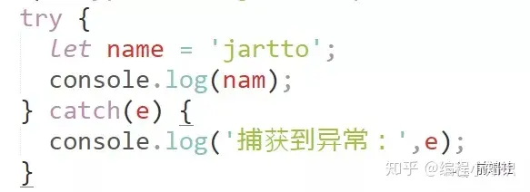
输出：
2、不能捕获到语法错误，我们修改一下代码，删掉一个单引号：
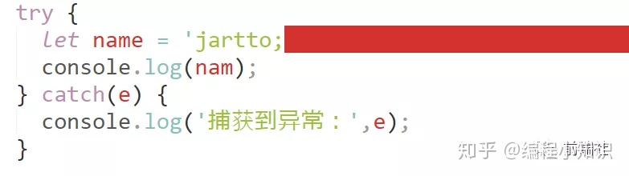
输出：
不过语法错误在我们开发阶段就可以看到，应该不会顺利上到线上环境。
3、异步错误
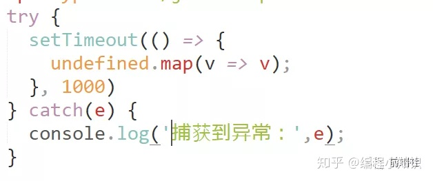
可以看看日志：
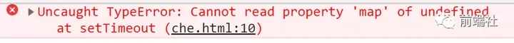
并没有捕获到异常，这是需要我们特别注意的地方。
四、window.onerror 不是万能的
当 JS 运行时错误发生时，window 会触发一个 ErrorEvent 接口的 error 事件，并执行 window.onerror()。
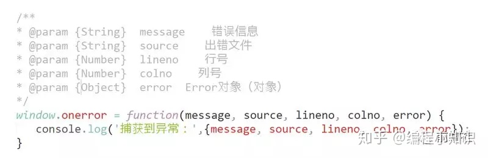
1、首先试试同步运行时错误
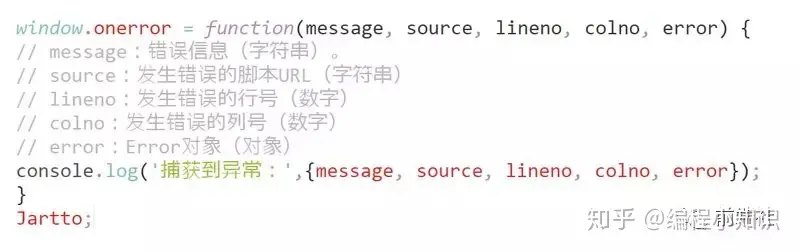
可以看到，我们捕获到了异常：
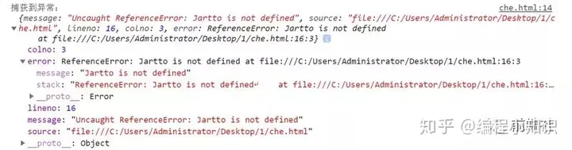
2、再试试语法错误呢？

控制台打印出了这样的异常：
竟然没有捕获到语法错误？
3、怀着忐忑的心，我们最后来试试异步运行时错误：
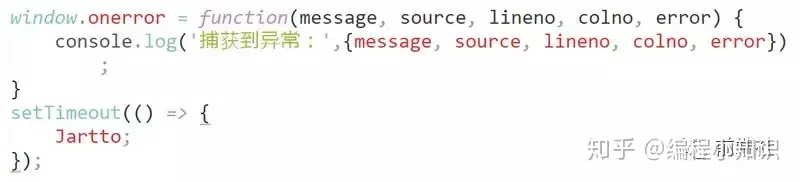
控制台输出了：
4、接着，我们试试网络请求异常的情况：
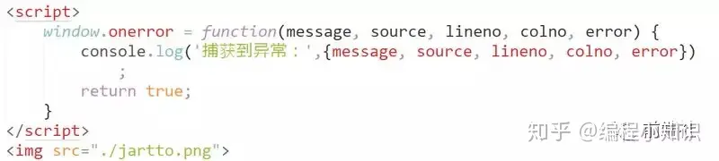
我们发现，不论是静态资源异常，或者接口异常，错误都无法捕获到。
补充一点： window.onerror 函数只有在返回 true 的时候，异常才不会向上抛出，否则即使是知道异常的发生控制台还是会显示 Uncaught Error: xxxxx
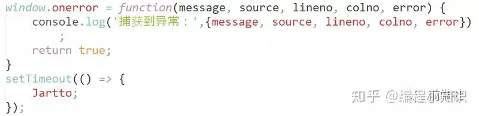
控制台就不会再有这样的错误了：
需要注意：
- onerror 最好写在所有 JS 脚本的前面，否则有可能捕获不到错误；
- onerror 无法捕获语法错误；
到这里基本就清晰了：在实际的使用过程中，onerror 主要是来捕获预料之外的错误，而 try-catch 则是用来在可预见情况下监控特定的错误，两者结合使用更加高效。
问题又来了，捕获不到静态资源加载异常怎么办？
一、window.addEventListener
当一项资源（如图片或脚本）加载失败，加载资源的元素会触发一个 Event 接口的 error 事件，并执行该元素上的 onerror() 处理函数。这些 error 事件不会向上冒泡到 window ，不过（至少在 Firefox 中）能被单一的 window.addEventListener 捕获。
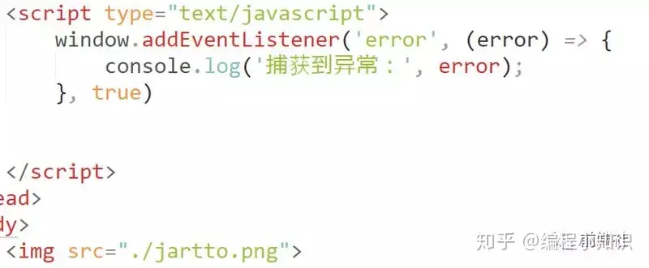
控制台输出：
由于网络请求异常不会事件冒泡，因此必须在捕获阶段将其捕捉到才行，但是这种方式虽然可以捕捉到网络请求的异常，但是无法判断 HTTP 的状态是 404 还是其他比如 500 等等，所以还需要配合服务端日志才进行排查分析才可以。
需要注意：
不同浏览器下返回的 error 对象可能不同，需要注意兼容处理。
需要注意避免 addEventListener 重复监听。
二、Promise Catch
在 promise 中使用 catch 可以非常方便的捕获到异步 error ，这个很简单。没有写 catch 的 Promise 中抛出的错误无法被 onerror 或 try-catch 捕获到，所以我们务必要在 Promise 中不要忘记写 catch 处理抛出的异常。
解决方案： 为了防止有漏掉的 Promise 异常，建议在全局增加一个对 unhandledrejection 的监听，用来全局监听 Uncaught Promise Error。使用方式：
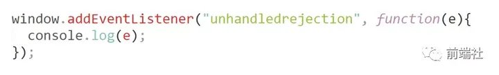
我们继续来尝试一下：
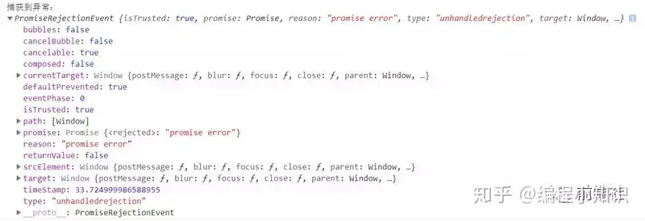
那如果对 Promise 不进行 catch 呢？

嗯，事实证明，也是会被正常捕获到的。
所以，正如我们上面所说，为了防止有漏掉的 Promise 异常，建议在全局增加一个对 unhandledrejection 的监听，用来全局监听 Uncaught Promise Error。
补充一点：如果去掉控制台的异常显示，需要加上：
三、VUE errorHandler
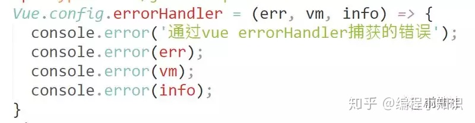
四、React 异常捕获
React 16 提供了一个内置函数 componentDidCatch，使用它可以非常简单的获取到 react 下的错误信息
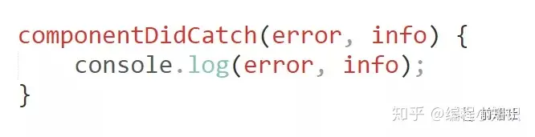
UI 的某部分引起的 JS 错误不应该破坏整个程序，为了帮 React 的使用者解决这个问题，React 16 介绍了一种关于错误边界（error boundary)的新观念。
需要注意的是：error boundaries 并不会捕捉下面这些错误。
- 事件处理器
- 异步代码
- 服务端的渲染代码
- 在 error boundaries 区域内的错误
我们来举一个小例子，在下面这个 componentDIdCatch(error,info) 里的类会变成一个 error boundary：

然后我们像使用普通组件那样使用它：
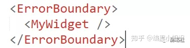
componentDidCatch() 方法像 JS 的 catch{} 模块一样工作，但是对于组件，只有 class 类型的组件(class component )可以成为一个 error boundaries 。
实际上，大多数情况下我们可以在整个程序中定义一个 error boundary 组件，之后就可以一直使用它了！
五、iframe 异常
对于 iframe 的异常捕获，我们还得借力 window.onerror：
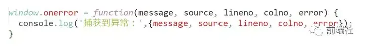
一个简单的例子可能如下：
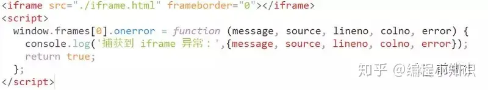
六、Script error
一般情况，如果出现 Script error 这样的错误，基本上可以确定是出现了跨域问题。这时候，是不会有其他太多辅助信息的，但是解决思路无非如下：
跨源资源共享机制( CORS )：我们为 script 标签添加 crossOrigin 属性。
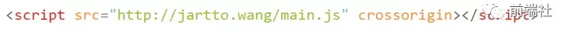
或者动态去添加 js 脚本：
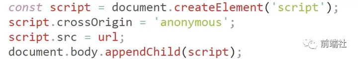
特别注意，服务器端需要设置：Access-Control-Allow-Origin
此外，我们也可以试试这个-解决 Script Error 的另类思路：
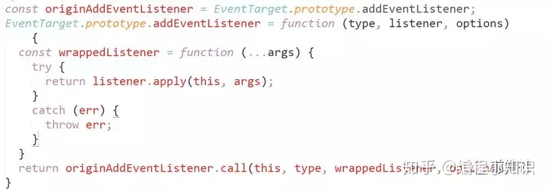
简单解释一下：
改写了 EventTarget 的 addEventListener 方法；
对传入的 listener 进行包装，返回包装过的 listener，对其执行进行 try-catch；
浏览器不会对 try-catch 起来的异常进行跨域拦截，所以 catch 到的时候，是有堆栈信息的；
重新 throw 出来异常的时候，执行的是同域代码，所以 window.onerror 捕获的时候不会丢失堆栈信息；
利用包装 addEventListener，我们还可以达到「扩展堆栈」的效果
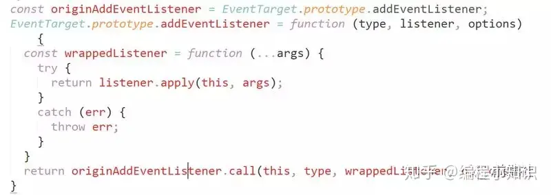
七、崩溃和卡顿
卡顿也就是网页暂时响应比较慢， JS 可能无法及时执行。但崩溃就不一样了，网页都崩溃了，JS 都不运行了，还有什么办法可以监控网页的崩溃，并将网页崩溃上报呢？
崩溃和卡顿也是不可忽视的，也许会导致你的用户流失。
1、利用 window 对象的 load 和 beforeunload 事件实现了对网页崩溃的监控。
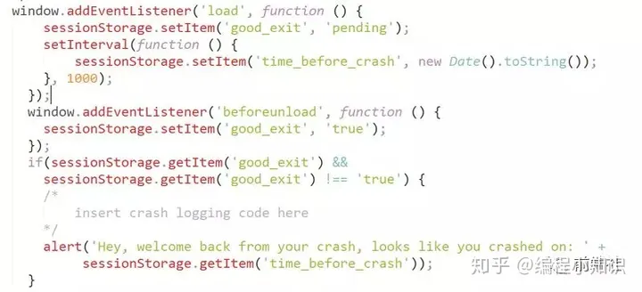
2、基于以下原因，我们可以使用 service Worker 来实现对网页崩溃的监控。
- Service Worker 有自己独立的工作线程，与网页区分开，网页崩溃了，Service Worker 一般情况下不会崩溃；
- Service Worker 生命周期一般要比网页还要长，可以用来监控网页的状态；
- 网页可以通过 navigator.serviceWorker.controller.postMessage API 向掌管自己的 SW 发送消息。
八、错误上报
1、通过 Ajax 发送数据
因为 Ajax 请求本身也有可能会发生异常，而且有可能会引发跨域问题，一般情况下更推荐使用动态创建 img 标签的形式进行上报。
2、动态创建 img 标签的形式
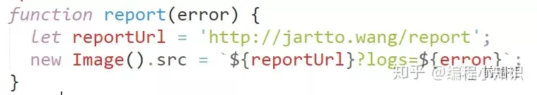
收集异常信息量太多，怎么办？实际中，我们不得不考虑这样一种情况：如果你的网站访问量很大，那么一个必然的错误发送的信息就有很多条，这时候，我们需要设置采集率，从而减缓服务器的压力:
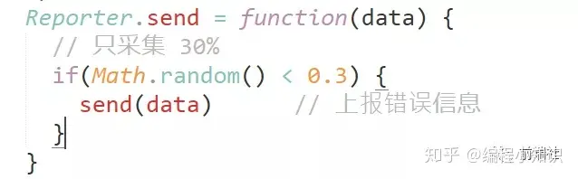
采集率应该通过实际情况来设定，随机数，或者某些用户特征都是不错的选择。
九、总结
回到我们开头提出的那个问题，如何优雅的处理异常呢？
- 可疑区域增加 Try-Catch
- 全局监控 JS 异常 window.onerror
- 全局监控静态资源异常 window.addEventListener
- 捕获没有 Catch 的 Promise 异常：unhandledrejection
- VUE errorHandler 和 React componentDidCatch
- 监控网页崩溃：window 对象的 load 和 beforeunload
- 跨域 crossOrigin 解决